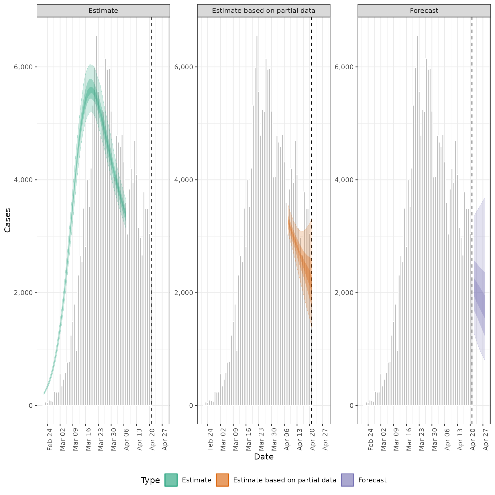
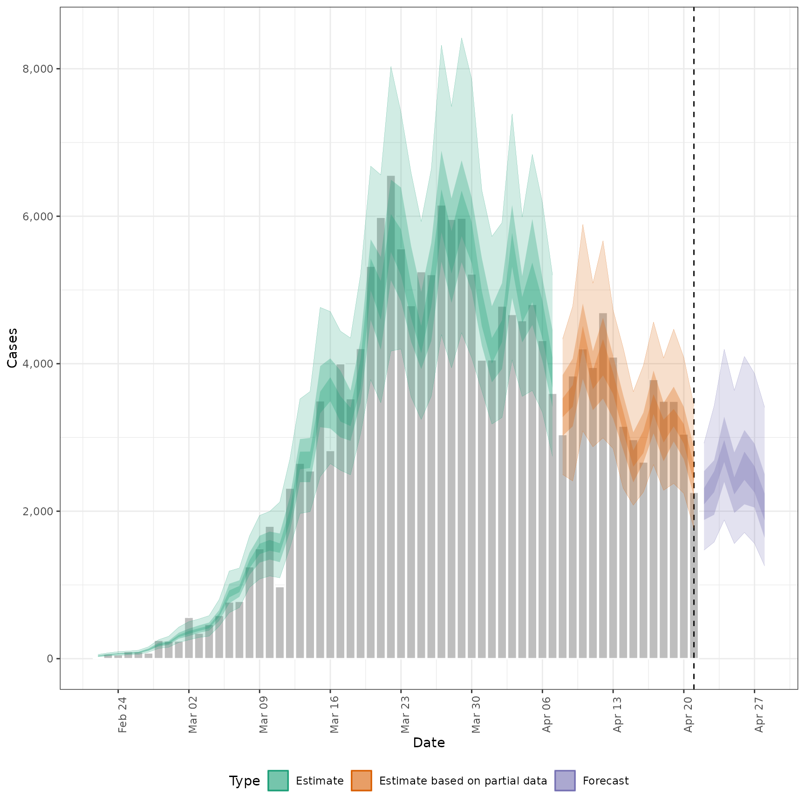
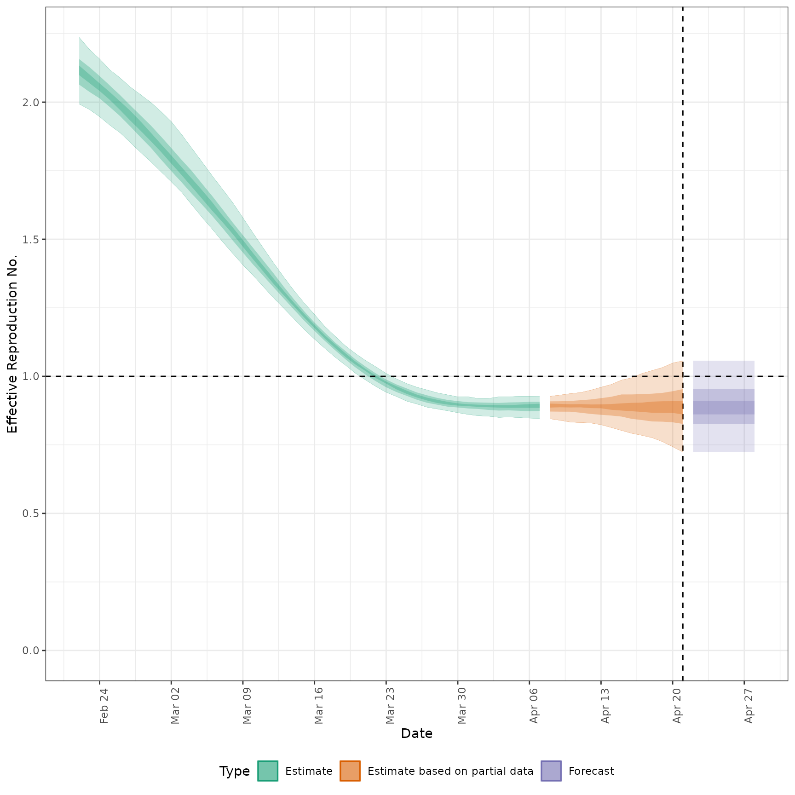

![[Questioning]](figures/lifecycle-questioning.svg) Allows users to plot the output from
Allows users to plot the output from estimate_infections() easily.
In future releases it may be depreciated in favour of increasing the
functionality of the S3 plot methods.
Arguments
- estimate
A
<data.table>of estimates containing the following variables: date, type (must contain "estimate", "estimate based on partial data" and optionally "forecast").- reported
A
<data.table>of reported cases with the following variables: date, confirm.- ylab
Character string. Title for the plot y axis.
- hline
Numeric, if supplied gives the horizontal intercept for a indicator line.
- obs_as_col
Logical, defaults to
TRUE. Should observed data, if supplied, be plotted using columns or as points (linked using a line).- max_plot
Numeric, defaults to 10. A multiplicative upper bound on the\ number of cases shown on the plot. Based on the maximum number of reported cases.
- estimate_type
Character vector indicating the type of data to plot. Default to all types with supported options being: "Estimate", "Estimate based on partial data", and "Forecast".
- style
Character string indicating the plot style for credible intervals. Options are "ribbon" (default) for shaded ribbon plots or "linerange" for error bars. Error bars can be clearer for weekly or aggregated data.
Examples
# get example model results
out <- readRDS(system.file(
package = "EpiNow2", "extdata", "example_estimate_infections.rds"
))
# plot infections
plot_estimates(
estimate = summary(out, type = "parameters", param = "infections"),
reported = out$observations,
ylab = "Cases", max_plot = 2
) + ggplot2::facet_wrap(~type, scales = "free_y")

# plot reported cases estimated via Rt
plot_estimates(
estimate = summary(out, type = "parameters", param = "reported_cases"),
reported = out$observations,
ylab = "Cases"
)

# plot Rt estimates
plot_estimates(
estimate = summary(out, type = "parameters", param = "R"),
ylab = "Effective Reproduction No.",
hline = 1
)

#' # plot Rt estimates without forecasts
plot_estimates(
estimate = summary(out, type = "parameters", param = "R"),
ylab = "Effective Reproduction No.",
hline = 1, estimate_type = "Estimate"
)
 # plot with error bars instead of ribbons
plot_estimates(
estimate = summary(out, type = "parameters", param = "R"),
ylab = "Effective Reproduction No.",
hline = 1, style = "linerange"
)
# plot with error bars instead of ribbons
plot_estimates(
estimate = summary(out, type = "parameters", param = "R"),
ylab = "Effective Reproduction No.",
hline = 1, style = "linerange"
)